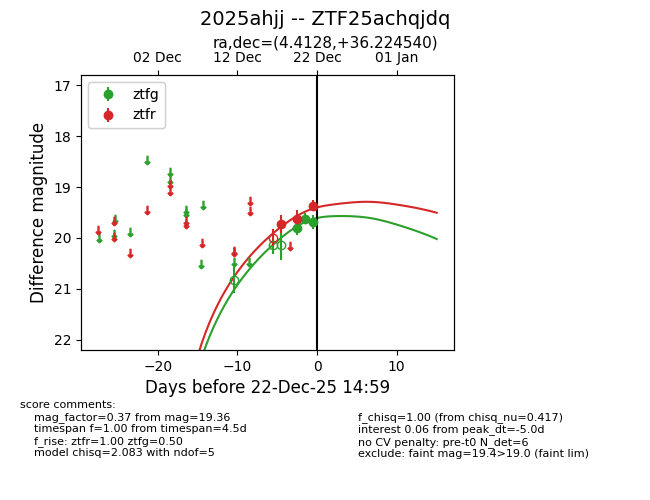
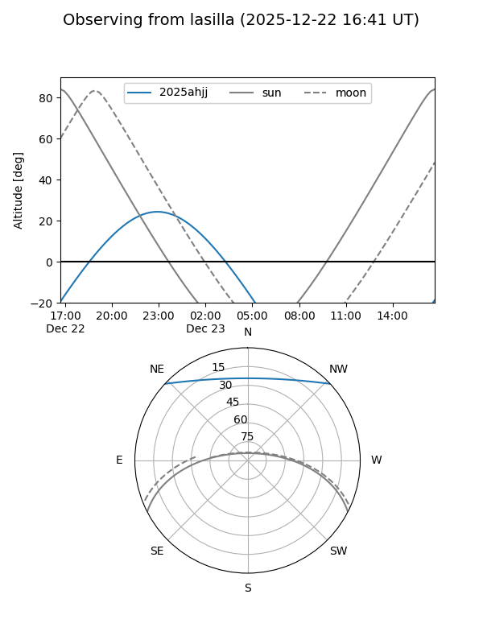
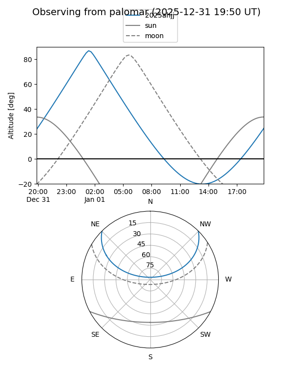
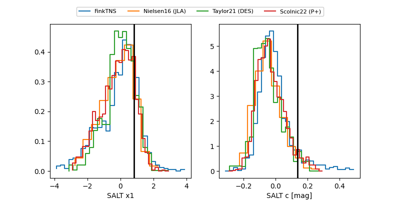

2025ahjj
Target 2025ahjj at 2026-01-14 03:20
Aliases and brokers:
FINK: link
Lasair: link
ALeRCE: link
TNS: link
YSE: link
alt names
ZTF25achqjdq (ztf,fink_ztf)
2025ahjj (tns,yse)
Coordinates:
equatorial (ra, dec) = 4.4128,+36.22454
equatorial (HMS+DMS) = 00:17:39.08,+36:13:28.34
galactic (l, b) = (115.3464,-26.14906)
Flags:
Photometry:
last atlasc=19.21, atlaso=nan, ztfg=19.45, ztfr=19.07
2 atlasc, 4 atlaso, 4 ztfg, 6 ztfr detections
Lightcurve

Visibility


Additional plots
